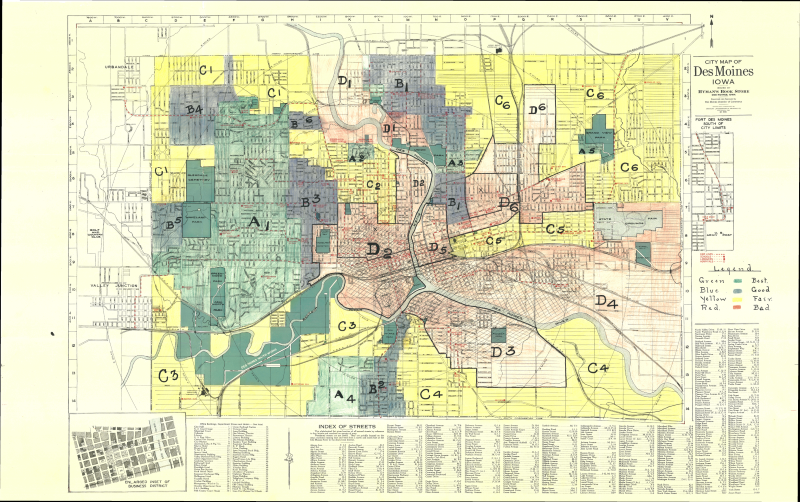
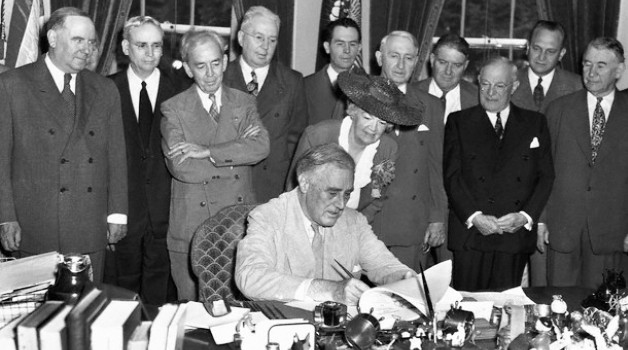
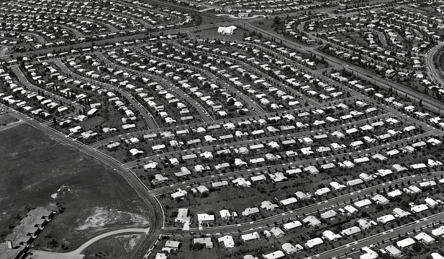
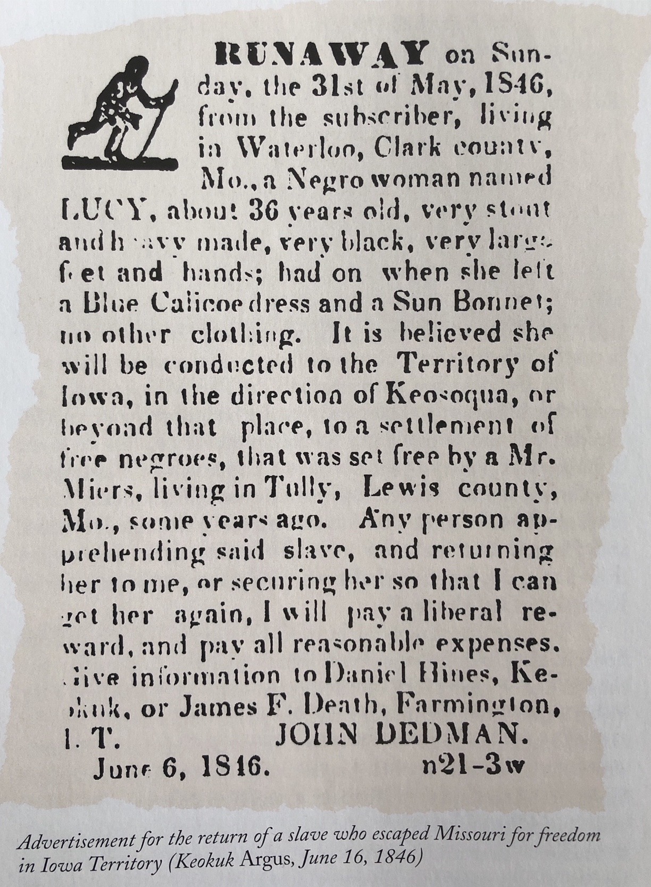
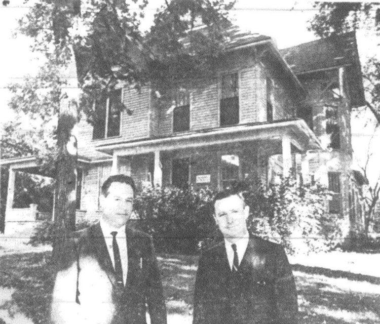
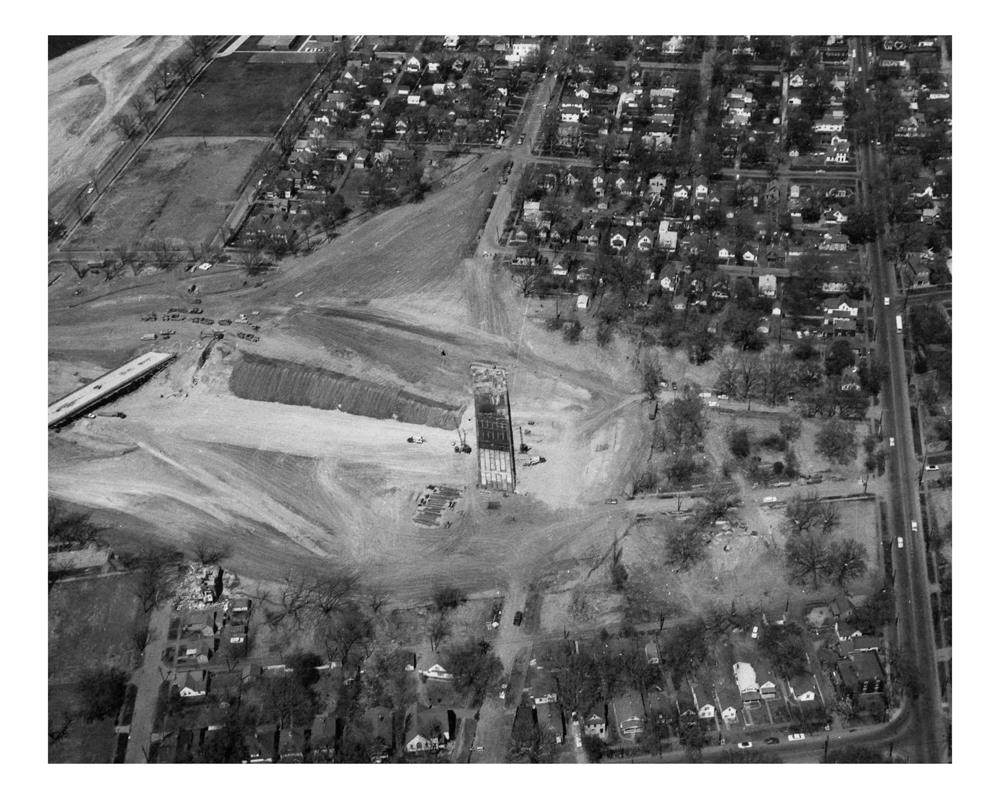
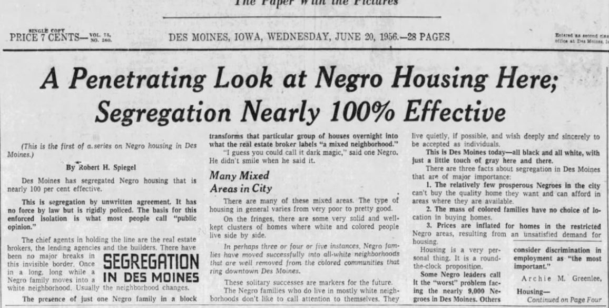

The separation of different groups has been a part of United States society from the beginning. For racial groups, such as African Americans, residential segregation has primarily been imposed on them depriving them of their freedom “- a deprivation especially onerous when its basis is the unalterable fact of race or ancestry”(McEntire, 1960: 88). Residential segregation has always been a central theme in the discussion of urban housing and quality of life for minorities, and in conversations around fair housing, a variety of researchers have spent most of their efforts analyzing cities which are known to have overt racial tensions, segregation, violence and criminal activity associated with minority populations. These cities primarily include Chicago, New York, Philadelphia, Cleveland, and Atlanta, which are major urban hubs with large minority populations (Rothstein, 2017b). The Midwest at large, particularly Iowa, have historically been overlooked in these studies and while that trend continues today in general, some research groups have emerged discussing these issues in places like Minneapolis/St. Paul, Minnesota, Seattle, and nationally.
There are generally two main concepts when discussing the causes of persistent residential segregation; racism and failure of public policy. Racism is the most significant player in the segregation of minority groups and has allowed society to enforce resistance to racial integration that has arisen from community racial preferences. Ultimately, race determines and influences how individuals interact as well as how policy is developed and enacted. While putting on the blame on racism for residential segregation is valid, it must also be noted that the failure of public policy is to blame for allowing racism to control and dictate how cities and communities across the United States were developed and allowed to linger. The fact that federal, state and local governments failed to implement and enforce anti-discrimination laws and housing policies that would force communities to become more inclusive has brought us to where we are today with segregation still leaving its mark on the landscape. Another part of this legislative failure was the lack of desire to control the actions of realtors, banks and lending organizations who benefited from discriminating against African Americans and other minority groups by redlining and overtly deciding where those groups could and could not rent or buy property. The systemic racism in our country and the failures at all levels has created an environment that is becoming harder and harder to change.
Federal Housing Policy
In June of 1933, the Federal Government launched a program called the Home Owners’ Loan Corporation (HOLC) which was tasked with providing funds “for refinancing urban mortgages in danger of default and grant[ing] lower-interest loans for former owners who had lost their homes through foreclosure to enable them to regain their properties” (Massey & Denton, 1993: 51). The HOLC, however, took their program to a new level establishing the discriminatory practice, now known as redlining, which was developed to evaluate risks related to loans made to specific neighborhoods that were predominantly populated by African Americans, as well as other minorities (Massey & Denton, 1993: 51). The general concept of redlining was to use a four category, color-coding system to access which areas should receive good loans for mortgages and which should not be granted good loans or loans at all. They used the colors red, yellow, blue, and green: red was marked as hazardous (predominantly African American), yellow was marked as declining (largely still African American depending on the city), blue was marked as desirable (homogenous), and green was marked as the best (white only) (Fleury, 2017). As it is well known and evident, HOLC was not the creator of the racial standards in real estate, but it was the first program to bureaucratize them and applied them at a large scale (Massey & Denton, 1993: 52). This allowed systemic segregation and discrimination to be supported and given power by the federal government. Redlining was an overt racist practice that not only was supported by the federal government but by the majority of the American population.
While this was developed at the federal level, private banks during the 1930s and 1940s heavily depend on HOLC maps, along with their company’s own residential security maps, to make their own loan decisions in their communities. Redlining maps allowed banks to legally channel funding and development away from African American neighborhoods based on risk, ultimately causing these areas to be dilapidated and forgotten. White residents did not want those considered “other” living in or near their neighborhoods, so with the development of this new tool to discriminate, residents both secretly and openly supported the separation of racial groups.

The next year, the federal government passed a new law called the National Housing Act of 1934, which was passed to “relieve unemployment and stimulate the release of private credit in the hands of the banks and lending institutions for home repairs and construction” (U.S. Department of Housing and Urban Development). This law also created the Federal Housing Administration, commonly known as the FHA, which became the central agency to handle mortgage insurance. While these housing laws were very successful in a broader context after the Great Depression, they did not produce positive outcomes for minorities who were among the worst affected by the economic failures. The time between the Great Depression and World War II saw massive amounts of housing development as construction costs and mortgages were increasingly cheaper for a large portion of the population. However, when World War II began, this type of construction was halted due to the need for defense. Although we were fighting in the war and most legislation being discussed during that time was war-related, in 1944 the Veteran’s Administration “home loan program” was authorized ensuring “millions of single-family and mobile home loans” (U.S. Department of Housing and Urban Development). This program impacted the housing market and would allow for significant growth outside of cities.
The FHA was essential in the changing in the housing finance system in the United States making it much easier for people to have access to homeownership, which increasingly became much less expensive during the 1940s than renting (Schwartz, 2015:73). Ultimately, the FHA was essential in reviving the housing industry during and after the Great Depression as well as during the post-war period. In order to lift communities up and improve the physical environment, the FHA “developed strict standards” to look at neighborhoods with the right kind of properties they were willing to help fund through mortgages (Schwartz, 2015: 73). As part of these standards, there were a variety of specific criteria to help measure neighborhoods and decide what areas were deemed “right” or “wrong.” It turned out that these standards found the right kinds of properties were always located outside minority neighborhoods. In 1935, the FHA produced a document titled Underwriting Handbook where they adopted neighborhood evaluation criteria which bluntly stated that “incompatible racial groups should not be permitted to live in the same communities” as white residents, as well as recommending that highways be “a good way to separate African American from white neighborhoods”(Gross & Rothstein, 2017). This document also stated that “[n]atural or artificially established barriers [would] prove effective in protecting a neighborhood and the locations within it from adverse influences,… include[ing] prevention of the infiltration of…lower class occupancy, and inharmonious racial groups” (Rothstein, 2017). The FHA was not trying to hide the racial undertones of this document and made it explicitly clear that race mattered in their decision to provide financial assistance and, more generally, where they wanted different people to live. The agency did not invent redlining and racial discrimination in our country, but it decided to go along with already established real estate practices even though the agency was in an excellent position to “reform these practices, with mortgage insurance providing powerful leverage.” As fair housing advocate Charles Abrams wrote, “ from its inception FHA set itself up as the protector of the all-white neighborhood, It set its agents into the field to keep negroes and other minorities from buying houses in white neighborhoods” (Schwartz, 2015: 75). The FHA allowed segregation and discrimination to embed itself even more into our society and into public policy.
The impressive revival of the housing industry during the 1930s and 1940s was connected with a variety of other factors which impacted where individuals could and could not live, including low cost of purchasing homes, the ability to get loans, the rise in racial fear, and the justification by the FHA for its racial policies. In particular, the FHA promoted “white flight” by causing fear among white residents that their property values would decrease if African Americans moved into their neighborhoods (Rothstein, 2017b). White flight became a nationwide exodus of white families moving from urban areas, which were predominantly populated by minorities, to homogenous suburban living. This movement continued to over many years, and in 1945 a new bill was passed that made the separation even more permanent and pervasive. This bill was the GI Bill which implemented the Veterans Administration and provided benefits “to veterans from World War II” that presented opportunities for them and their families to improve economically and socially through housing loans and medical benefits (Gross & Rothstein, 2017; U.S. Department of Housing and Urban Development, n.d.). While this benefited a large portion of the veteran population, African American veterans were excluded from these benefits and could not get loans for housing. The GI Bill, while not its intention to be housing policy, strictly excluded African Americans from obtaining housing outside of the urban core and ultimately played a crucial role in the segregation of African Americans across the United States. Richard Rothstein, author of Color of Law, notes that the Veteran’s Administration “adopted all of the FHA racial exclusion programs” and together these programs made it so African Americans were “not permitted to move into areas that the Federal Housing Administration and the Veterans Administration had designated for whites”(Gross & Rothstein, 2017).

Between 1947 and 1956, the federal government developed programs and laws that would increase construction of housing, improve urban centers, and generate public housing. In 1949, the federal government enacted another Housing Act, which authorized “funds to localities to assist in slum clearance and urban development, new construction” and other infrastructure items including vacant land, open assets, facilities, sewer facilities and water facilities (Gross & Rothstein, 2017). With white flight in cities across the United States, the Act’s major funding pushes for slum clearance and development specifically was a direct attack on the minority populations within the area and the low-income working men and women who were unable to move to the suburbs. The government, both federal and local, were able to decide which areas were considered slums and make the decision where new development would be most impactful, and generally, those areas deemed unwanted or ghettos were areas with higher concentrations of African Americans and other minorities, including the poor working class. While the 1949 Act provided new construction opportunities for cities in blighted areas, the amendment in 1954 brought the term “urban renewal” which was meant to focus more on both conservation of these blighted areas, but also larger public efforts to revitalize inner cities (U.S. Department of Housing and Urban Development). This amendment promoted the new idea of public housing development for low-income and minority populations that ultimately forced those groups into worse conditions than before as the buildings and properties were not maintained. And again in 1956, a new amendment was passed that authorized payment to people displaced by urban renewal and in need of relocation (U.S. Department of Housing and Urban Development).

The 1950s-60s were a time of racial dissonance. Congress passed the Civil Rights Act in 1964, which 1968, the United States passed the Fair Housing Act that was intended to prohibit “discrimination in housing based on a person’s race, color, religion, gender, disability, familial status, or national origin” (Analysis of Impediments to Fair Housing Choice for the State of Iowa, 2014; 1). However, despite this expressed intent, Congress ensured there would be “an unworkable enforcement mechanism” which, in practice, gave HUD limited power to help those who suffered discrimination (Lamb, 2005: 22). The Fair Housing Act processing of complaints alleging discrimination in housing was ineffective, and the monitoring of cities for segregated neighborhoods was deficient. The Fair Housing Act’s weakness in enforcement caused some turmoil within Congress as many committees tried to come to a consensus about what should be done; however, the hearings were never enough to make any substantial change (Meyer, 2000: 215). The Fair Housing Act continued to segregate and discriminate against African Americans on what they claimed to be an economic basis, due to their poor credit, not a racialized one. While the Fair Housing Act had good intentions on the surface, the racism embedded in our society and specifically in the mortgage lending and real estate practices would not allow for the laws to be operated and used to their written potential.
While the federal housing history continues until the present day, these policies discussed above were the most significant in the forming of residential segregation and the lasting effect it has had on communities around the United States, including Des Moines, Iowa.
Iowa State and Local Housing Policy
Iowa’s housing policies and anti-discrimination laws followed similarly to those made by the federal government; however, there are a few specific moments in time that need to be discussed to fully understand how Iowa and more specifically the City of Des Moines has viewed residential segregation and addressed the issues.
As the state committed to white supremacy during its early years as a territory, it was stated in the 1839 Laws of the Territory in the section titled “An Act to Regulate Blacks and Mulattoes and to Punish the Kidnapping of such Persons”, that African Americans who desired to live in Iowa had to “register with the clerk’s office in each county and post a five hundred dollar bond, guaranteeing their good behavior and preventing their becoming public charges of the state” (Dykstra, 1982: 409; Hill, 1981: 290). This first racial law in Iowa became commonly known as Iowa’s Black Laws. These black codes which determined the fate of any African American arriving across its borders.

Leading up to the enactment of the 1851 Exclusionary Law in Iowa, which would entirely bar African Americans from living and settling in Iowa, discussions surrounding black exclusion was an important topic, particularly when Iowa applied for statehood in 1846. The territorial legislator was aware that there could be consequences for excluding African Americans when trying to become a Union state. In 1846 approved constitution, a discriminatory clause stated that Africa-Americans could not vote to be members of government, was excluded from census taking and any other legislative appointment including militias. However, in 1851, the state government decided to entirely exclude African Americans from settlement in Iowa, being judges, lawyers, or attending public school. Those who already were living in Iowa were not forced to leave if they had been good citizens and complied with the laws of the state. This law, however, was not enforced, and in 1864, it was repealed toward the end of the Civil War ( Hill, 1981: 292).
The State of Iowa and Des Moines allowed federal laws to govern much of the African American housing starting in the 1930s with the Home Owner’s Loan Corporation redlining map which showed precisely which areas of the city were deemed high-risk areas to low-risk areas based on economic benefit and racial composition.
As redlining maps were produced, surveys were provided to different lending agencies and banks to discuss track and study their level of recovery of housing sales in the areas for which loans were provided after the Great Depression (Williamson, 1936). Such a survey for Des Moines explicitly stated that most people want to keep “the infiltration of the colored population” in check, that “it might be possible to confine these negro families to more definite areas if such low-cost housing was constructed” and that it could “help decrease the adverse effect that minority groups have” (Williamson, 1936: 6). One survey interviewee from the John Hancock Mutual Life Insurance Company and Private Mortgage Broker noted that the company restricted their “loans to the better sections and [would] not go into south Des Moines, that is, C-3, C-4 or D-3, southeast Des Moines or straight east of D-1 and we are not favorable to north Des Moines except the Union Park district” (Williamson, 1936). The redlining map of Des Moines allowed lenders and banks to ensure specific neighborhoods stayed white and flourished, while other specified areas retained and suppressed minority residents and their deteriorating structures.
Starting around 1958, Des Moines started a large number of Urban Renewal projects throughout the city which impacted a large number of neighborhoods, particularly those that were predominantly African American. One such neighborhood was Sherman Hill located west of Downtown. Sherman Hill had seen disinvestment in the mid-20th century as white flight took hold and with redlining pushing residents of color to certain parts of the city, it became a “ghetto” and African American neighborhood that grew into a cultural and economic epicenter along Center Street. The area had become the black side of town to whites in the city. However, in the 1960s two sizeable Urban renewal projects, Interstate 235 and the Oakridge Area Urban Renewal Project, displaced and destroyed substantial sections of this community. The Oakridge project destroyed many buildings determined to be “deficient” and affordable, displacing over 180 people who had nowhere to go, so in 1966 the Des Moines Area Council of Churches discussed the potential for a non-profit “housing community that could serve the needs of low-income families in Des Moines” specifically those displaced by the Oakridge Project (Sherman Hill Neighborhood Plan, 2017). 
The Center Street area provided a variety of opportunities for the African American population, for example enjoying “music at the Billiken, 1113, and Sepia nightclubs, among several others” and the “neighborhood ‘brimmed with activity,’ wrote journalist and historian Raymond Kelso Weikal. ‘And its music flowed like flood waters’ “ (Fehn & Jefferson, 2010:56). Most of the black economic, social and cultural life was held on or near Center Street, and when the interstate was constructed, black businesses and venues were disintegrated, and an area that had once “served and supported the black community” was bulldozed without second thought (Fehn & Jefferson, 2010:55). In the thick of urban renewal around 1967, those being displaced grew frustrated and upset with the city council for not providing them with good housing and a smooth relocation process. Those displaced received low appraisals for their homes and businesses and were upset that the city did not offer them enough relocation compensation to buy comparable homes somewhere else in the city (Fehn & Jefferson, 2010:60).
In 1959, an article from the Des Moines Register notes the NAACP protested the discrimination and high pricing of new housing due to the displacement of African Americans because of Urban Renewal projects such as the Interstate 235. The construction of Interstate 235 would bulldoze around one-mile, displacing around 400 families, many of which were African Americans (Shane, 1959). An interviewed individual noted that the “freeway office had not kept its promise to give her another month to move to a house,” and another family saying “We were paid only $5,500 for our three-bedroom house and now are forced to buy a two-bedroom house, not as good, for $9,500. When I checked with the urban renewal board officials, I found that there were racial restrictions noted in their listings” (Shane, 1959). The main problem facing African Americans was limited housing supply for their color, and when they tried to find housing, they had to pay more because of their race.

As part of Urban Renewal, the government was supposed to aid those displaced or facing displacement to find housing. However, it was specified by the Council of Social Agencies that a “major obstacle in the effective operation of an urban renewal program was to find adequate housing for all displaced families within the price range which the families could afford“ (Committee, 1962: 3). It noted that while there were 212 rental vacancies in Des Moines, only 1% were available to African Americans and if they applied for a rental property the price of said property increased drastically, for example from $65 to $80 (Committee, 1962: 3). Due to these limitations, moving anywhere with the same type of housing or better was impossible and forced African American families to live in areas with substandard housing. Along with the issues of unaffordable, adequate housing for African Americans, the Urban renewal staff did not provide communication to families being displaced resulting in many families having “moved before they could receive help from the Urban Renewal Staff because of a lack of information as to their status” (Committee, 1962: 4). Urban renewal staff needed to take responsibility to keep those families informed about when displacement would happen and the options they had to secure standard housing, however, they were naive in how to deal with different racial groups they were positioned to aid (Committee, 1962: 4). This lack of communication led to hundreds of families being displaced without warning and without support from the government.
In the River Hills neighborhood undergoing Interstate 235 urban renewal, the staff presented a table which showed the distribution of African Americans throughout that urban renewal area. This found that 43% of nonwhite households were in the urban renewal area, and of that number, 12% of the nonwhites living there resided in houses (Committee, 1962).
Urban renewal disrupted and dissolved large portions of African American neighborhoods throughout Des Moines and the poor communication from Urban renewal staff, African Americans were further segregated into more dense areas than before. They were unable to find adequate housing in good neighborhoods as white realtors and residents made it impossible to move past specific boundary markers. This moment in time is described by one Des Moines black resident as their 9/11 (Fehn & Jefferson, 2010: 56).
During urban renewal and the rise in public housing developments across the country, Des Moines considered at great length the development of public housing and a low-rent housing program in the city. While public housing and the subsequent program would have significantly benefited the community, in 1961 the legislature defeated the proposed bill. Again in 1963, another law was introduced for open occupancy housing to allow all residents to live anywhere in the city, but that was also defeated despite the legislature approving a similar bill a few years earlier for urban renewal tracts (Silag et al., 2001). There was no desire to provide sufficient housing for minorities.
The true impact and enforcement of the policies emntioned above were not done correctly and The racism embedded in Des Moines neighborhoods remained intact.
Iowa's Complex History
While many laws passed both in the state and nationally had a serious negative impact on the African American community of Des Moines, it must be recognized that the issue of race and discrimination in Iowa, since becoming a territory, is very complex. Throughout its history, Iowans, both white and black, have resisted in different forms against racism and segregation put in place by fellow residents, state officials or the federal government.
Early in its existence, in the 1850s, antislavery Iowans and abolitionists worked to reverse laws and bring more equality to Iowa. However, in 1857, the antislavery movement had not made an impact and Iowa voters rejected “a proposition to strike the word ‘white’ from the state constitutional provision regarding suffrage” as newspapers “had struck fear into the minds of many readers with editorials predicting that blacks would dominate a state with black suffrage” (Stone, 1990). While those aspects were not positive, there were other changes in the Iowa bill of rights that gave African Americans some legal status by “expanding the right for blacks to a trial by jury and the right to testify in court” (Stone, 1990). They worked hard to change people’s minds about African Americans during a time in Iowa when most state representatives and residents wanted to exclude them from the state.
Similarly, in the 1850s, after the Fugitive Slave Act was passed, the Underground Railroad in Iowa became active. The Underground Railroad in Iowa was never an organized system as it was in other parts of the United States, even though many prominent members in the state were part of concealing slaves and helping them escape capture (Silag et al., 2001). There is an incomplete list of 116 agents in Iowa who took part in the Underground Railroad. These individuals who aided slaves across the State of Iowa were heroes and heroines, as they risked not only their lives but the lives of those they were helping. Des Moines was part of the Underground Railroad system which provided a network for slaves to flee the south and cross into free states, such as Iowa. An abolitionist by the name of John Brown “escorted a group through the city in 1858” while others housed the slaves as they made their journey to Canada (Lufkin, 1980).
Between 1865 and 1880, the State of Iowa looked to amend its constitution by “striking out the word WHITE in the article on suffrage” (Silag et al., 2001). While there was opposition to this change, many were in favor. It took many years and elections of new officials to get this legislative amendment passed, as under the “Iowa constitution of 1857, a constitutional amendment had to be approved by two successive General Assemblies and then ratified in a popular referendum” (Silag et al., 2001). It was a tricky system to get anything amended, but election after election the Republican elected governors pushed for the adoption of a black suffrage amendment. In 1868, the amendment passed both the House and the Senate and black men had won the right to vote and were automatically eligible to be jurors (Silag et al., 2001). This was a start to ending discrimination in Iowa’s Constitution, which became discrimination free by 1880.
Starting in the 1880s, Iowa’s coal industry boomed bringing in a large black population to work in the mines across the entire state. Instead of being concentrated to a few bigger cities, they were spread across the entire state. It is noted that in Des Moines and the surrounding townships coal mine owners “readily sought Negroes to labor in their mines” and that “from 1900 to 1925, more black males worked in Polk County’s numerous mines than in any other single occupation” (Lufkin, 1980) . Mining was an occupation in Iowa that had a high percentage of African American labor and many became involved in the United Mine Workers Union. It is said that “a black representative of Polk County even attended the state miner’s convention as early as 1900” and in the years to follow more African American delegates went to both the state and national conventions (Lufkin, 1980). In Southern Iowa, small mining towns such as Buxton, a “town of about 6,000 formed around 1900”, was predominantly black and both races lived together between 1900 and 1924 when the mine closed (Stone, 1990). The town of Buxton is a good example of how, despite discriminatory state and federal laws, a small town could provide “racial harmony and integration” with a “unique multi-ethnic community” and deliver equal wages for all miners no matter the color of their skin (“Buxton: Iowa’s Black Utopia”). Buxton shows that while segregation was taking over the country and Jim Crow Laws were being put into effect, Buxton did not enforce those laws and beliefs. They were able to have equal access to all public accommodations and “did not have to settle for the worst living conditions or undesired residence” (Gray, 1984).
In 1883, the Supreme Court of the United States declared an 1857 federal act guaranteeing equal accommodations in “inns, public conveyances, theaters, and other places of amusement” unconstitutional (Silag et al., 2001). This left many African Americans worried. So, in March of 1884, the Iowa General Assembly with support and push from Governor Buren R. Sherman, passed the Iowa Civil Rights Act of 1884. This Act “forbade segregation in such places as inns, public conveyance, barbershops, theatres and other places of amusement” (Lufkin, 1980). Iowa was one of thirteen states in the United States to pass a law like this in the 1800s (Stone, 1990). It should be noted, however, that despite this push for equality in the public realm, the act was rarely used to address issues of civil rights violations between 1884-1923 (Silag et al., 2001). And while it was amended in 1923 to encourage more “frequent prosecutions, the enforcement mechanism remained ineffectual for African-Americans seeking equal accommodations” (Silag et al., 2001).
In 1915, Iowa’s first National Association for the Advancement of Colored People (NAACP) branch was established in Des Moines. Some of the main purposes of the NAACP is to address the struggles African Americans face in the United States. The Des Moines branch addressed a variety of issues in the city and in the 1940s when they looked back at what they had achieved it was found, “separate bathing beaches had ended”, of three public schools, “two frequently predominantly by whites were open to blacks and the third predominantly black, had black lifeguards”, an “African American served on the Polk County Grand Jury” and “black employees worked for the county, the city and the state in more than just menial positions” (Silag et al., 2001). They have been active since their creation and are still extremely active today. The NAACP provided help for African Americans being discriminated against in Iowa. They have and continue to be an integral part of the resistance against discrimination and racism in Iowa.
Moving forward to the 1950s, the Des Moines Tribune in 1956 housed an incredible reporter named Robert Spiegel, who pushed to write articles over a short period about discrimination and segregation that African Americans struggle with daily in Des Moines. He “wrote a series of stories on segregated housing, which he felt was the most important writing of his career” (“Robert Spiegel Obituary,” 2009). His articles were done at a time when discussing race and the quality of life for African Americans was not seen positively by white Iowans. However, he knew how important this topic was and that stories about the discrimination of black families in Des Moines needed to be heard. Below are images of some of the titles from his articles which provide anecdotal information from both the African American families being segregated and from the white realtors or landlords.

The articles depict the regularity behind the segregation of African Americans in Des Moines and the excuses or misrepresentations used by white neighbors and realtors/landlords as to why black families were not welcome in certain parts of the city. In 1956, Spiegel received the Sidney Hillman Foundation award for this work. While these articles accomplish much in terms of policy chance or adoption his reporting brought direct attention to this important issue on a white newspaper and white audience.
On April 29, 1965, the Iowa legislature approved the Iowa Civil Rights Act and (Silag et al., 2001). This act created the Iowa Civil Rights Commission, which “was empowered to hold hearings and to rule on complaints of unfair of discriminatory practice in public accommodations and employment because of race, creed, color, national origin, or religion” (Silag et al., 2001). In 1967 the Iowa Civil Rights Act of 1965 was amended to include the Discrimination in Housing Act, which added that “discrimination in the sale or lease of housing or real property as an unfair or discriminatory practice” (Silag et al., 2001). The law specifically notes,
It shall be an unfair or discriminatory practice for any person, owner, or person acting for an owner, …: (a) To refuse to sell, rent, lease assign, sublease, refute to negotiate, or to otherwise make unavailable, or deny any real property or housing accommodation or part, portion, or interest therein, to any person because of the race, color, creed, sex, sexual orientation, gender, identity, religion, national origin, disability or familial status of such person. (CIVIL RIGHTS COMMISSION, n.d.)
These laws helped to make a step forward in Iowa to provide equal opportunity and equal rights to all its residents.
While the Iowa Civil Rights Act of 1965 combatted discrimination against African Americans in Des Moines, its effectiveness after enactment was not positive and the implementation of the act was not properly done. African Americans protested continuing discrimination and, in 1966, a park located north of downtown was the site of a large riot with young African Americans and police. Good Park (1155 17th street, Des Moines, IA 50314) was the main hangout for kids and teenagers since the early 1940s. The park contained a wading pool, shelter, basketball courts and lots of green space to play. The young people involved in the riot were triggered by the incessant confrontation and discrimination by the police. When the riot happened in Good Park in July 1966, some of the young people involved told the Des Moines Register reporters that “there was not enough for them to do at night. Some complained of the inability to find jobs; others expressed concern about the rough police treatment” (Fehn & Jefferson, 2010). The riots occurred “at a time when perceptions of police brutality were sparking riots in many American cities. African Americans, many stuck in northern urban ghettos with few economic opportunities, grew impatient with the slow progress of the mainstream civil rights movement” (Fehn & Jefferson, 2010). This riot came at a time when African Americans were starting to be infused by the rhetoric of black power, which would become more prominent a couple of years later.
Another active African American organization in Iowa emerged in Des Moines around 1968. This organization was the Black Panther Party, led by Mary Rem, a young woman who had left Des Moines “in 1967 just after her high school graduation” and had “headed for Oakland, California” where the headquarters of the Black Panther Party was growing (Anderson, 2005). In 1968, she came back to Des Moines and along with Charles Knox, founded the Black Panther Party with the intention of promoting and developing “black power in the community” which meant “the economic, political and cultural control of the black community by black people” (Fehn & Jefferson, 2010). The Des Moines BBP chapter understood and used the practices established by the national BBP in California, but only addressed the things that were relevant to African Americans in Des Moines. The party only lasted until 1970, but its influence on the Des Moines, both black and white, was evident. It is said that while the larger community was “uncomfortable with black power rhetoric” it was acknowledged “that the party’s programs, demonstrations, and posturing spurred the city toward more equitable employment of black citizens” (Fehn & Jefferson, 2010).
While these were not the only actions taken by the state of Iowa or by groups of people or by individuals championing civil rights and equality, they provide good examples of how Iowa was divided on issues of race and how the State’s history of is very complex. The historical complexity surrounding race discussions and action in the state of Iowa has left a lasting impact on the landscape of the City of Des Moines. While people today keep fighting for civil rights and equality, it remains evident that policies and planning actions of elected officials have not produced sufficient change to benefit African Americans and their communities in Des Moines. A commitment must follow to identify what changes are needed and what actions address longstanding, racially based injustices that continue to mark the lives of African Americans in Des Moines.
Subtle Discrimination: 1960s-Today
When considering discriminatory practices in housing, the financial aspect is often overlooked. Loans and insurance are typically seen as initial steps people must take to purchase a home and that such actions have nothing to do with race. That, however, is not the case. Minorities are more often denied or receive less consideration for a loan to either purchase a home or secure a rental. Today in the United States, African Americans on average receive “denials 19.3 percent of the time” for conventional home-purchase loans, and in FHA markets “Blacks’ applications were rejected at a 17.9 percent rate”(Harney, 2018). In Polk County, African Americans are denied 24% more often compared to the county average at 11.3% (AALFDSM, 2017). These statistics show that the lending practices today continue to follow the practices done for years by using different ways to subtly discriminate through an economic lens, not unlike that which was created by the FHA in 1935.
The Fair Housing Act of 1968 offered a promise that oppressive tactics such as discriminatory lending practices and housing sale practices would be taken down. At the time of its passage, “outright refusal to rent or sell to blacks became rare, given that overt discrimination could lead to lawsuits and prosecution under the Fair Housing Law. Realtors were no longer free to reject black clients as they walked through the door”(Massey & Denton, 1993: 97). However, this did not change the underlying systemic racism within these practices. While overt racial practices lessened, a new type of discrimination emerged in the housing market, which aimed at maintaining residentially segregated areas. This new discrimination was subtle, virtually unrecognizable by potential minority renters or homebuyers; “minority homeseekers may not even be aware that they have been discriminated against since they are generally treated courteously and told about at least one available house or apartment” (Turner & Ross, 2005: 82). Despite receiving a smile and being shown a few properties, minority home seekers were deceived by landlords and rental agencies who, “through a series of ruses, lies, and deceptions, [made] it hard for [minority individuals] to learn about, inspect, rent or purchase homes in white neighborhoods”(Massey & Denton, 1993: 97). The covert discriminatory practices of racial steering, information steering, and personal discrimination, described below, shaped a segregated housing market to counter the efforts of the FHA in America.
The discriminatory practice of racial steering occurred when potential renters or buyers were shown different properties in specific communities based on their race, religion, gender, or any other protected class. This practice included the systematic guidance of minority customers to a neighborhood compatible “with respect to social and economic characteristics, especially racial composition” (Massey & Denton, 1993: 100). Realtors diverted African American home seekers to areas with larger black populations as they wanted to maintain the white areas white. They also had an assumption that African Americans wanted to live with the same race. Because racial steering is a form of overt racism, it is not a widely used practice today as there are other more subtle ways to steer people from certain areas and into others (Massey & Denton, 1993: 104).
Information steering is another subtle discriminatory practice which occurs when “whites get information about a wide diversity of neighborhoods while minorities are limited to just a few” (Turner & Ross, 2005: 94). It also occurs when minorities are not given the same information as whites when inquiring about a rental or home. Information steering is a widely employed, discriminatory practice because of its subtle nature. Information disseminated by newspapers, landlords and realty companies may contain misinformation, and a minority person may not know they have been discriminated against unless the deception is discovered.
Similarly, personal discrimination is another form of prejudice which holds that most white individuals would rather live separately from minorities. Substantial “literature on discrimination indicates that a housing agent might deny blacks access to housing because of his [or her] own prejudice or because of the prejudice of his white customers” (Yinger, 1986: 886). Although minorities seldom face realtors who are “free to reject black clients as they walked through the door” or experienced signs such as “white only” or “no niggers allowed,” a systematic and evident prejudice remains throughout white America (Massey & Denton, 1993: 97). Personal discrimination is commonly related to financial considerations that operate to disrupt the business relationship between landlords or agents and their existing and potential tenants. As economist John Yinger observes, “the primary cause of racial discrimination in housing is that housing agents illegally promote their economic interests by catering to the racial prejudice of their current or potential white customers” (Yinger, 1986: 892). Personal discrimination plays a significant role in housing discrimination that takes place today.
While the practices described above should have been outlawed by the Fair Housing Act of 1968 and other subsequent laws, these behaviors by realtors, landlords, and mortgage lenders still take place. Between 2007 and 2012, 163 known complaints about unfair and racially discriminatory housing practices were made by African Americans in Polk County and submitted to the Office of Fair Housing and Equal Opportunity (“FHEO Filed Cases - Data.gov,” 2019). These enduring practices illuminate the failure of federal, local policies such as The Fair Housing Act in accomplishing the elimination of discrimination in housing.